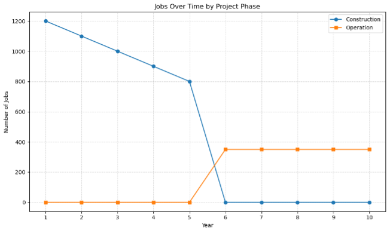
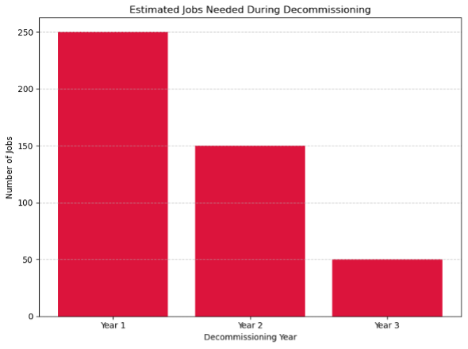

Jobs Opportunities
We’re creating diverse job opportunities across all phases of the Direct Air Capture facility in Stockton, CA. From construction to operations and decommissioning, learn about projected roles and how to apply.
Job Types

Job Timeline

Phase & Roles

Decommissioning
